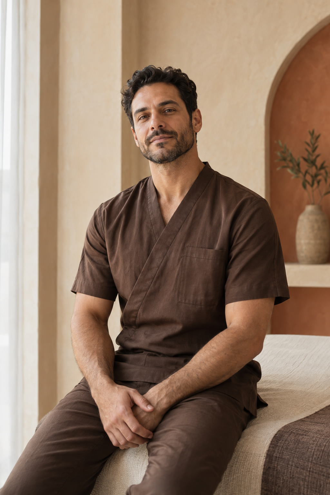

Deep release
Focused bodywork for the back, shoulders
and the tension you carry.

Precision in every touch. A personal approach to recovery, release and the pleasure of moving freely.
 EXPERT HANDS. INDIVIDUAL CARE.
EXPERT HANDS. INDIVIDUAL CARE.Focused bodywork for the back, shoulders
and the tension you carry.
Considered care for active bodies.
Find your natural range again.
A slower rhythm. A softer touch.
Space to return to yourself.
Great bodywork is a dialogue. We listen, understand
and adapt — until the work feels entirely yours.
Your movement, daily rhythm and goals
guide the work from the very first visit.
Pressure and technique respond to you,
with care for the smallest details.
Private surroundings, unhurried attention
and room to move at your own pace.
Knowledge is only the beginning.
Our approach is thoughtful, intuitive
and always personal.


“Not just a moment of relief.
A feeling of being myself again.”
A MOMENT AFTER BODYWORK · DUBAI
“Thoughtful, precise and never rushed.
Every detail made me feel at ease.”ON PERSONAL ATTENTION
“A quiet space to reset.
I left feeling lighter in every way.”ON THE STUDIO EXPERIENCE
Sculpted light. Honest materials.
A sense of calm that begins
before the first touch.

Considered in every curve.
Felt in every moment.

Tell us how your body feels and what you would like from your visit. We will help you find a suitable approach during your personal consultation.
Our treatment formats last 60 or 90 minutes. We will confirm the right duration when arranging your visit.
Comfortable clothing is all you need. Your specialist will explain what to expect before the session.
Please contact the studio in advance. We will help arrange another time.
A conversation. A considered approach.
A little time dedicated to your body.